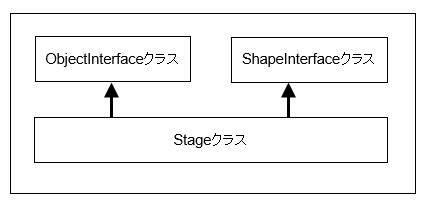

図0202a
ObjectInterfaceはOnCreate()関数、 OnPreCreate()関数、OnEvent()関数を持つ派生クラスを作成するためのインターフェイスです。このほかにGetThis()テンプレート関数により、自分自身のshared_ptrを返すことができます。
void Stage::UpdateStage() {
//追加・削除まちオブジェクトの追加と削除
SetWaitToObjectVec();
//Transformコンポーネントの値をバックアップにコピー
for (auto ptr : GetGameObjectVec()) {
if (ptr->IsUpdateActive()) {
auto ptr2 = ptr->GetComponent<Transform>();
ptr2->SetToBefore();
}
}
//配置オブジェクトの更新1
for (auto ptr : GetGameObjectVec()) {
if (ptr->IsUpdateActive()) {
ptr->OnUpdate();
}
}
//自身の更新1
if (IsUpdateActive()) {
OnUpdate();
}
//配置オブジェクトのコンポーネント更新1
for (auto ptr : GetGameObjectVec()) {
if (ptr->IsUpdateActive()) {
ptr->ComponentUpdate();
}
}
//衝突判定の更新（ステージから呼ぶ）
UpdateCollision();
//自身のビューをアップデート
auto ViewPtr = GetView(false);
if (ViewPtr && ViewPtr->IsUpdateActive()) {
ViewPtr->OnUpdate();
}
//配置オブジェクトの最後の更新
for (auto ptr : GetGameObjectVec()) {
if (ptr->IsUpdateActive()) {
ptr->OnLastUpdate();
}
}
//衝突判定のメッセージ発行（ステージから呼ぶ）
UpdateMessageCollision();
//自身の最後の更新
if (IsUpdateActive()) {
OnLastUpdate();
}
//コリジョンのリセット
for (auto ptr : GetGameObjectVec()) {
ptr->CollisionReset();
}
//子供ステージの更新
for (auto PtrChileStage : GetChileStageVec()) {
PtrChileStage->UpdateStage();
}
}
template<typename T, typename... Ts>
shared_ptr<T> AddGameObject(Ts&&... params) {
try {
auto Ptr = ObjectFactory::Create<T>(GetThis<Stage>(), params...);
PushBackGameObject(Ptr);
return Ptr;
}
catch (...) {
throw;
}
}
PushBackGameObject(Ptr);
SetWaitToObjectVec();
Stage::RemoveGameObject<ゲームオブジェクト型>(ゲームオブジェクトポインタ)
１、基本的に別のゲームオブジェクトのshared_ptrを保持しない。 ２、保持せずにSetSharedGameObject()関数、GetSharedGameObject()関数で使うときに取得する。 ３、どうしても保持したければweak_ptrで保持し、使用の都度lock()で有効かどうかチェックする。
class TestObject : public GameObject {
public:
//構築と破棄
TestObject(const shared_ptr<Stage>& StagePtr);
virtual ~TestObject(){}
//初期化
//OnCreate()関数は何もしない
virtual void OnCreate() override{}
//WithParamによる初期化（仮想関数でなくてよい）
void OnCreateWithParam(const Vector3& Pos);
//中略
};
//コンストラクタ
TestObject::TestObject(const shared_ptr<Stage>& StagePtr):
GameObject(StagePtr)
{}
//WithParamによる初期化（仮想関数でなくてよい）
void TestObject::OnCreateWithParam(const Vector3& Pos){
auto PtrTransform = AddComponent<Transform>();
PtrTransform->SetPosition(Pos);
PtrTransform->SetScale(1.0f, 1.0f, 1.0f);
PtrTransform->SetRotation(0.0f, 0.0f, 0.0f);
}
AddGameObjectWithParam<TestObject>(Vector3(0.0f, 0.5f, 5.0f));
//プレーヤーの作成 auto PlayerPtr = AddGameObject<Player>(); //シェア配列にプレイヤーを追加 SetSharedGameObject(L"Player", PlayerPtr);
auto PtrPlayer = GetStage()->GetSharedGameObject<Player>(L"Player", false);
if (PtrPlayer) {
//見つかった場合の何かの処理
}
else{
//見つからなかった場合の何かの処理
}
auto PtrPlayer = GetStage()->GetSharedGameObject<Player>(L"Player"); auto PtrTrans = PtrPlayer->GetComponent<Transform>();
//Enemyのグループを作成する
CreateSharedObjectGroup(L"EnemyGroup");
auto EnemyPtr = AddGameObject<Enemy>();
auto Group = GetSharedObjectGroup(L"EnemyGroup");
Group->IntoGroup(EnemyPtr);
auto Group = GetStage()->GetSharedObjectGroup(L"EnemyGroup");
for (auto& v : Group->GetGroupVector()) {
auto shptr = v.lock();
if (shptr) {
auto EnemyPtr = dynamic_pointer_cast<Enemy>(shptr);
//EnemyPtrを使った何かの処理
}
}
void Stage::RenderStage() {
//描画デバイスの取得
auto Dev = App::GetApp()->GetDeviceResources();
auto MultiPtr = dynamic_pointer_cast<MultiView>(GetView());
if (MultiPtr) {
for (size_t i = 0; i < MultiPtr->GetViewSize(); i++) {
MultiPtr->SetTargetIndex(i);
if (IsShadowmapDraw()) {
Dev->ClearShadowmapViews();
Dev->StartShadowmapDraw();
DrawShadowmapStage();
Dev->EndShadowmapDraw();
}
//デフォルト描画の開始
Dev->StartDefultDraw();
RsSetViewport(MultiPtr->GetTargetViewport());
DrawStage();
//デフォルト描画の終了
Dev->EndDefultDraw();
}
//描画が終わったら更新処理用に先頭のカメラにターゲットを設定する
MultiPtr->SetTargetIndex(0);
}
else {
if (IsShadowmapDraw()) {
Dev->ClearShadowmapViews();
Dev->StartShadowmapDraw();
DrawShadowmapStage();
Dev->EndShadowmapDraw();
}
//デフォルト描画の開始
Dev->StartDefultDraw();
RsSetViewport(GetView()->GetTargetViewport());
DrawStage();
//デフォルト描画の終了
Dev->EndDefultDraw();
}
//子供ステージの描画
for (auto PtrChileStage : pImpl->m_ChildStageVec) {
PtrChileStage->RenderStage();
}
}